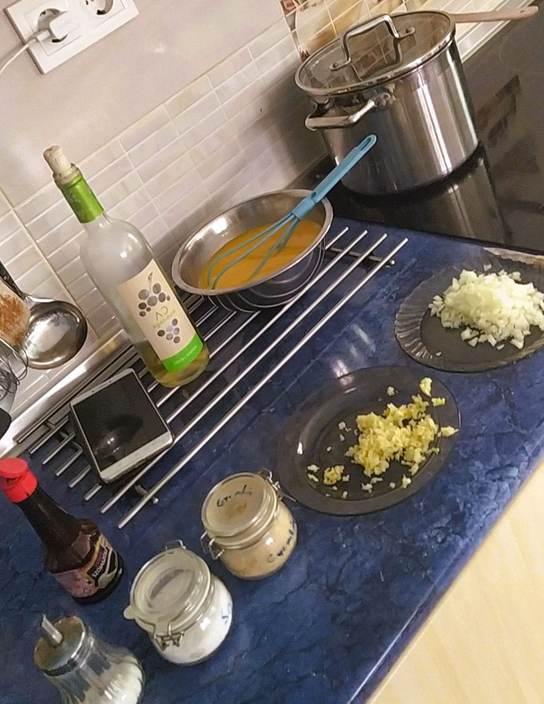

Hozzávalók
- 6 dl hosszú szemű rizs (helyetteíthető bulgurral, ha egészségesebbre akarjuk készíteni)
- Vegeta (ízlés szerint)
- 1 fej vöröshagyma
- 4 gerezd fokhagyma
- 1 csomag kockázott bacon
- 1 dl kínai főzőbor
- 2-3 ek szójaszósz
- 6 db tojás
- 1 csipet só
- 1 tk cukor
Elkészítés
Lépésenként
- Mindenek előtt elkészítjük a rizst (kevés olajon alacsony fokozaton felrakjuk a tűzhelyre, közbe a rizs mennyiségének a duplájával számolva vizet mérünk ki egy edénybe és felforraljuk. Ráöntjük a rizsre, vegetával fűszerezzük, fedőt teszünk rá és alacsony hőfokon 30 percig főzzük).
- Félretesszük a rizst
- Egy wokban (vagy nagyobb serpenyőben) a felvert tojásból kevés olajon egyszerű rántottát készítünk.
- Papírtörlővel bélelt tálba tesszük, hogy az olajat felszívja.
- A maradék olajba belerakjuk a felaprított hagymát, fokhagymát és gyömbért.
- Miután megdinszteltük a hagymát, hozzá tesszük a sót, beleszórjuk a cukrot, és hagyjuk kicsit karamellizálódni.
- Hozzáadjuk a kockázott bacont, majd ráöntjük a kínai főzőbort.
- Szójaszósszal megbolondítjuk, majd a rizst és a rántottát is beleforgatjuk.
- Új hagymával díszíthetjük.
Jó étvágyat!
